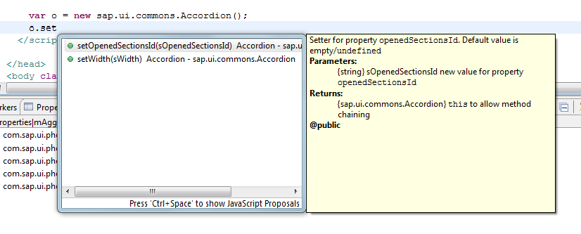
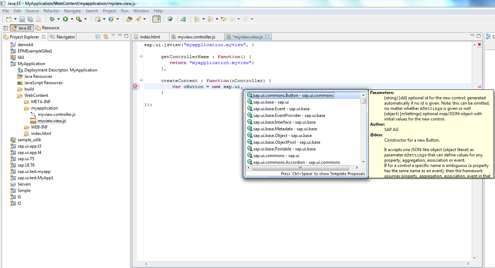

JavaScript Code Completion
Code completion provides a context-sensitive input help while you're coding.
Automatic Code Completion for SAPUI5 Application Projects
The Eclipse JavaScript Development Tools (JSDT) provide an editor which parses scripts and offers a code completion functionality.

Code Completion for SAPUI5 Views
For JavaScript views, code completion is available.

Enabling Code Completion for Other Projects
If you are not working with a SAPUI5 application project, you can perform the following preparing steps to add the required SAPUI5 core libraries to the JavaScript include path.
To set the JavaScript facet, proceed as follows:
- Open
 Project
Project  Properties
Properties .
.
- Select Project Facets.
- If you do not see the list of all possible facets, click the link: Convert to facet form and wait a second to see all available facets.
- Mark JavaScript facet on the same view.
- Choose Apply and Close.
Your project now has the JavaScript facet. Now you can add the SAPUI5 core libraries. Proceed as follows:
- Open Project Properties.
- Choose JavaScript Include Path.
- Select Add JavaScript Library….
- Select SAPUI5.
- Choose Finish.
- Choose Apply and Close.
You should now be able to see the following JavaScript resources in your project: